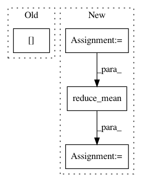

67f74e592427d15578eae688f677952d8bd98d3a,tensorforce/core/distributions/categorical.py,Categorical,tf_parametrize,#Categorical#Any#Any#,80
Before Change
def tf_parametrize(self, x, mask):
epsilon = tf.constant(value=util.epsilon, dtype=util.tf_dtype(dtype="float"))
shape = (-1,) + self.action_spec["shape"] + (self.action_spec["num_values"],)
value_shape = (-1,) + self.action_spec["shape"] + (1,)
// Deviations
action_values = self.deviations.apply(x=x)
After Change
else:
// Explicit states value and advantage-based action values
states_value = self.state_value.apply(x=x)
states_value = tf.reshape(tensor=states_value, shape=shape[:-1])
action_values = tf.expand_dims(input=states_value, axis=-1) + action_values
action_values -= tf.math.reduce_mean(input_tensor=action_values, axis=-1, keepdims=True)
// TODO: before or after states_value?
min_float = tf.fill(
dims=tf.shape(input=action_values), value=util.tf_dtype(dtype="float").min
In pattern: SUPERPATTERN
Frequency: 5
Non-data size: 4
Instances
Project Name: reinforceio/tensorforce
Commit Name: 67f74e592427d15578eae688f677952d8bd98d3a
Time: 2020-04-25
Author: alexkuhnle@t-online.de
File Name: tensorforce/core/distributions/categorical.py
Class Name: Categorical
Method Name: tf_parametrize
Project Name: MorvanZhou/tutorials
Commit Name: 780dcd9fd372afa8524a6515eec6a4c90b1494c9
Time: 2017-03-09
Author: morvanzhou@gmail.com
File Name: Reinforcement_learning_TUT/8_Actor_Critic_Advantage/AC_CartPole.py
Class Name: Actor
Method Name: __init__
Project Name: asyml/texar
Commit Name: f55217e5fee88bc38e58e62e886f79e561c4d069
Time: 2018-08-14
Author: zhitinghu@gmail.com
File Name: texar/losses/losses_utils.py
Class Name:
Method Name: reduce_batch_time
Project Name: reinforceio/tensorforce
Commit Name: 98fe0142e39af4a9a2450ca3f3e48a53152f5091
Time: 2016-12-29
Author: k@ifricke.com
File Name: tensorforce/updater/deep_q_network.py
Class Name: DeepQNetwork
Method Name: create_training_operations
Project Name: calico/basenji
Commit Name: d58f2f8913722e0c95e665ab442da0c12a1766ae
Time: 2016-06-24
Author: davidkelley44@gmail.com
File Name: basenji/rnn.py
Class Name: RNN
Method Name: build